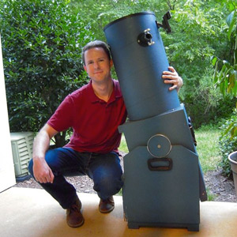

About Me
I've been interested in astronomy since I was a child. My first telescope was a hand-me-down Tasco reflector from the '80s that barely worked. I have since upgraded to the large Dobsonian reflector seen in the photo.
In recent years, I have joined my love of astronomy with my love of coding to create the astronomy website Look at the Sky, which has observing tips and interesting facts about space.
- Stephen Lee

Stephen Lee
Astronomy and coding enthusiast